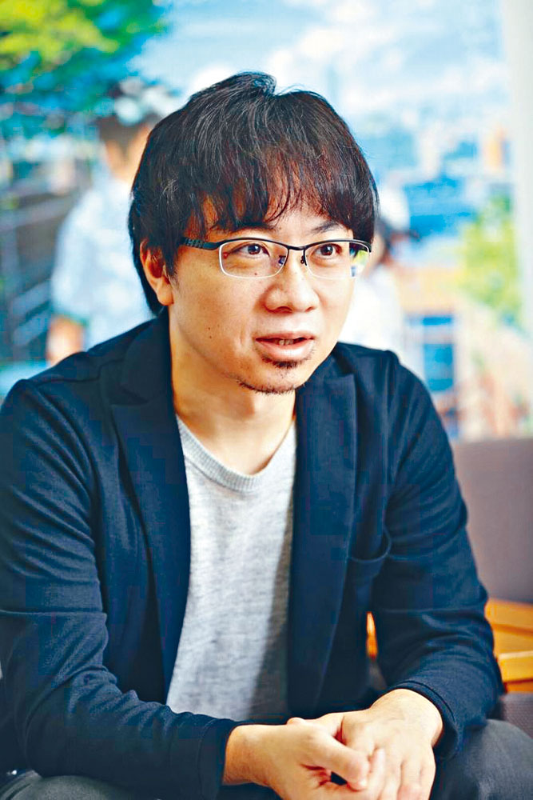
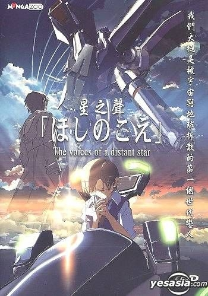
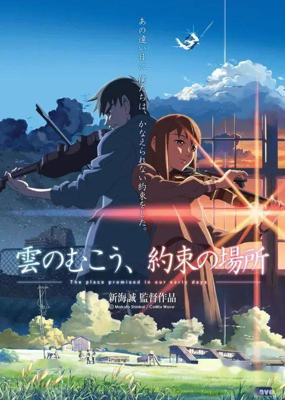
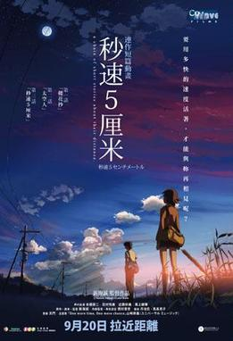
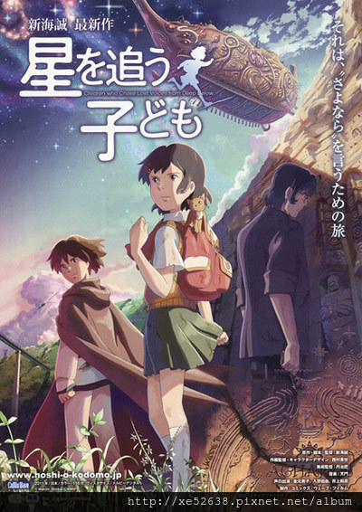
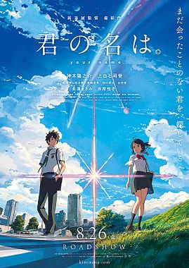

生長在山嶽連綿不絕、擁有無數絕景的長野縣，天空原野那純粹的藍與綠，陽光微風吹動的斑斕光影，記憶中的故鄉經常重現在他的作品，像是2016年的代表作「你的名字」，女主角三葉所居住的系守町，原型可能就來自長野縣的諏訪湖。為了上大學來到東京的新海誠，從此有了第二故鄉，並出現在2019年的動畫電影「天氣之子」，那些明信片般令人愛不釋手的經典場景，像是讓女主角陽菜獲得晴女力量的神社，就是銀座的朝日稻荷神社。還有她為煙火節祈求晴天的地點，則是六本木之丘展望台。出身於建築世家的他，其父為創始於1909年的家族建築企業「新津組」的社長，妻子是演員三坂知繪子、有當童星的女兒新津知世（新津ちせ）。受到中學時觀賞的德古拉電影和吉卜力動畫《天空之城》的影響，希望能自己做出像那樣令人驚豔的作品。2002年公開獨立製作的科幻動畫短片《星之聲》後開始受到矚目。現於Comix Wave Films擔任映像作家。
2002年，公開《星之聲》，導演、劇本、演出、作畫、美術和編輯等等的作業幾乎全部一個人進行約25分鐘的全數位動畫（digital animation），以大幅超越過往其他獨立製作作品的水準而受到相當的注目。
此作在第1回新世紀東京國際動畫博覽會21公募部門獲得優秀獎。在一次存取中，新海誠提到該動畫花費了大約7個月「實際工作」的時間。2004年，首個電影長編作品《雲之彼端，約定的地方》於日本公開上映。超越前作的作畫水準與細膩演出及音樂的巧妙結合而受到高度評價。
2005年6月5日，播出的NHK節目《頂尖人物》（トップランナー，Top Runner），稱新海誠為「後宮崎世代旗手」（ポスト宮崎世代の旗手）呼聲高的映像作家。
新海誠的內心自成世界，他喜歡寫作，是村上春樹的粉絲，曾經拿「秒速五厘米」中的女性角色和村上春樹「挪威的森林」中的人物做比較；而「你的名字」中男女主角從陌生到交集的命運，也讓人聯想起村上春樹的「遇見100%的女孩」中，那堅信「在這世界上的某個地方，一定有一位100%跟自己相配的少女和少年」。
即使已經過了不惑之年，新海誠的作品仍然充滿少年感，創作圍繞著青澀純愛，透過簡約的情節和清新的文字，傳達出新海誠風格中一貫的愁思與距離，在如同村上春樹那種「少年時我們追求激情，成熟後卻迷戀平庸」的生活哲學下，打造出動畫主角「孤獨一人也沒關係，只要能發自內心地愛著一個人，人生就會有救。哪怕不能和他生活在一起」的感動。
2009年12月24日，新海誠於官方網站公佈，《秒速五公分》原班人馬已集結完成，開始全速製作最新動畫電影《追逐繁星的孩子》。《追逐繁星的孩子》於2011年5月公開上映。2012年9月，由於中東的工作室以及各地的研討會開辦，新海誠被選為「世界で活躍し『日本』を発信する日本人」，獲得內閣府國家戰略室的擔當大臣古川元久致贈的感謝狀。
新海誠坦言，他的動畫故事背景大多平淡，劇情中沒有太大的改變與起伏，因為人們的日常生活往往就是如此，配合上他源自現實世界的取景風格，一種春有百花秋有月、夏有涼風冬有雪的平凡歲月。新海誠希望在作品中呈現出，即便是小人物、是微不足道的瑣事，也可能帶來冒險的心情和巨大的觸動。
如今，隨著「你的名字」揚名國際，新海誠已經穩坐日本動畫大師的地位，儘管如此他仍謙虛的表示會繼續努力，想拍出只有自己能拍的動畫，如果他的作品能讓觀眾有所感動，那就是對他的慰藉了。一代動畫大師樸實的心願，一如村上春樹的作品名言：「看見你幸福的樣子，於是幸福著你的幸福」。
《星之聲》為新海誠的首部商業作品，也被視為他的出道作。
2039年時，人類火星調查隊在火星的塔爾西斯高地上發現異文明的遺跡，但被突然出現的異生命體攻擊而全軍覆沒。為了對抗被命名為塔爾西斯的異生命體威脅，聯合國組成了聯合國宇宙軍。
2046年，當時就讀於中學三年級的長峰美加子和寺尾昇是同屬劍道部的好友，兩人互有好感，但還未成為情侶。兩人原本想上同一所高中，但美加子被聯合國宇宙軍選為先發機器人駕駛，2047年為了追查塔爾西斯人而被編入里希提亞艦隊，跟著艦隊旗艦里希提亞號從地球出發。隨著艦隊離地球越來越遠，兩人的距離變成以光年來計算，兩人透過手機發送的電子郵件要抵達所花費的時間也越來越長。
美加子離開半年後，艦隊抵達冥王星軌道，尚一無所獲。然而不久，塔爾西斯人突然出現，戰鬥一觸即發，美加子駕駛機器人迎戰。艦隊為了逃離為數龐大的敵人，超空間跳躍至距離地球1光年多的地方，沒多久又要透過捷徑錨點前往8.6光年外的天狼星星系，且尚未發現返航捷徑。一旦抵達天狼星星系，意味著郵件要8年多才到得了地球，美加子在啟航前傳送了一份需要1年抵達的郵件，信裡告訴昇兩人的距離將擴大到8光年以上，並寫著「我們就好像是被宇宙和地球拆散的戀人似的」。
地球上的昇也思念著美加子，雖然一度放棄等待，但在2048年收到美加子在前往天狼星星系前傳的郵件後，毅然決定即使只有自己也要向前邁進。終於，美加子抵達天狼星星系的第四行星阿格哈塔星。這顆星球有著和地球類似的生態和自然景觀，在令人懷念的環境圍繞之下，美加子傳送了費時8年才能到達地球的郵件給昇，信中傾訴了對他的愛意。隨後美加子意外與塔爾西斯人進行接觸，在過程中面對了自己的心情。聯合國宇宙軍很快和塔爾西斯人軍隊開戰，結果遭到對方自殺式攻擊而損失慘重。美加子駕駛機器人將敵人一一殲滅，但機體破損只能在宇宙中下墜。
8年後的2056年，地球上的昇收到那封告白郵件時已經24歲，且即將登上艦隊工作。雖然郵件內容大半成了亂碼，昇仍接收到了美加子的心意。最後一幕，兩個身處不同時空的人同時說道：「我就在這裡」
《雲之彼端，約定的地方》是新海誠的第三部電影作品，也是他製作的第一部長片
故事年代為不遠的未來，背景設定在以現實世界為基礎所衍生的架空世界。日本在津輕海峽另一側的北海道遭到「聯盟」佔領，改名「蝦夷」，日本南北兩側形成對立局勢。聯盟在蝦夷建造了高度直達雲端、叫做「巨塔」的神秘建築物，該神秘巨塔因此造成日美聯軍與聯盟的軍事衝突點。
住在青森縣的中學三年級生浩紀與拓也夢想前往巨塔所在的海峽對岸去，兩個人為了實現夢想而在大草原上的車輛工廠「蝦夷製作所」裡製造名為「維希拉」（的飛機。因為是違法行為，兩人全力保密，除了蝦夷製作場的社長岡部外幾乎沒有人知道，但拓也卻不小心對心儀的同班女生佐由理說溜嘴。佐由理對此很感興趣，常在一旁看著兩人工作，並支持他們要在暑假搭乘維希拉到巨塔的計畫，也許下一起搭乘維希拉到海峽對岸去的約定。就這樣三人間的感情越來越深厚。然而，佐由理在做了一個有關塔的夢後，沒告知浩紀與拓也就突然轉學，並從此下落不明。兩人受到打擊而停止了維希拉的計畫。
三年後的1999年秋，日美聯軍和聯盟之間關係緊張，日本國內的激進反聯盟組織「維魯達解放戰線」也蠢蠢欲動。進入研究所的拓也師從富澤常夫教授研究巨塔的秘密。富澤認為，巨塔是用來連結平行世界——亦即宇宙的夢境——的裝置，可以窺視分歧出來的平行世界。但巨塔的存在導致周圍區域被平行世界給「置換」，或稱之為「吞噬」，因此也可以視為兵器。而擴散之所以能停在2公里處，可能是因為有外在因素壓制了巨塔的活動。富澤發現巨塔的研發者有個孫女，也就是佐由理，因為怪病而持續三年沒有醒來。
與此同時，浩紀不斷夢見中學時的教室，感覺得到佐由理殘留的氣息卻不見人影。佐由理在夢境中則孤身處於一個荒涼的世界，場景和浩紀的夢境相同，但除了她以外沒有別人存在。佐由理在夢中感到無盡孤獨，現實中的浩紀也因對於自己放棄約定感到難以釋懷，一天天都過得相當難熬且寂寞。1999年冬，想要和巨塔做個了斷的拓也加入摧毀巨塔的計畫。屬於維魯達解放戰線的岡部稱高層執意開戰，所以他將在衝突開始時趁著混亂開飛機炸毀巨塔。與此同時，浩紀收到了佐由理三年前寫下的信，終於得知佐由理昏迷的消息，急忙趕到信裡提到的醫院，卻發現她已被移至別處。在佐由理曾存在的病房當中，浩紀和佐由理在夢中短暫相遇，下定決心到要履行三年前的約定、帶著佐由理前往巨塔，並相信如此一來就能拯救她。
原來在浩紀趕到之前，富澤就覺得佐由理和巨塔有所關聯，所以將她轉移至青森縣的研究所並加以監控。就在浩紀在東京的病房中與夢境連結時，佐由理的清醒程度突然上升，巨塔周圍的侵蝕規模也巨幅增加。因為塔捕捉到的平行世界流入了佐由理的夢中，所以整個世界沒有被平行世界吞噬，但只要佐由理醒來世界就會面臨毀滅。幾天後富澤讓拓也來找佐由理，表示要將她移送到美國本土，以免受到戰火波及。
浩紀回到青森後與拓也重逢，浩紀表示要將佐由理帶到巨塔那邊讓她醒來，並請求他的協助，但拓也知道佐由理醒來會導致世界毀滅而拒絕。在經過一番掙扎後，拓也還是決定協助浩紀。岡部得知兩人的事後，決定改讓他們開著維希拉去炸毀巨塔，如此一來就可以帶著佐由理飛往巨塔。拓也將佐由理從研究所中帶出來，並和浩紀再度攜手將維希拉趕工完成。兩人的計畫是用維希拉載著佐由理到巨塔的附近讓她醒來，再用維希拉搭載的炸彈將巨塔摧毀，阻止世界毀滅。不久後，維魯達點燃戰火，戰事在津輕海峽開打。浩紀將佐由理搬上維希拉的後座，載著她往巨塔飛去。
維希拉穿越戰火逐漸靠近塔，佐由理在夢境中察覺自己即將醒來，但也發現自己一旦醒來，就會忘記在夢中察覺到的對浩紀抱持的感情。浩紀也有失去某種東西的預感，但為了履行約定，他還是繼續往塔飛去。佐由理努力祈禱著寧願醒不來也要將感情傳達出去，而浩紀則祈禱著佐由理趕快醒來。最後佐由理終究醒來，並悵然若失地落淚。浩紀安慰她一切都可以重新開始。如同富澤的預料，佐由理醒來後巨塔開始吞噬周遭的一切，浩紀投下炸彈成功摧毀巨塔，使吞噬停止。雖然成功拯救了世界，但三人「約定的地方」也不復存在。劇情接到電影的最一開始，成人後的浩紀獨自到了三人一起度過那年夏天的草原，現在的他了解了當時所不了解的，佐由理所說的那會失去某物的預感。
海誠的第四部作品。新海誠表示，這部作品表達了不同於之前的風格，沒有幻想或科幻元素，試圖從一個不同的觀點來看真實世界
本片由三個故事構成，分別是〈櫻花抄〉描述貴樹和明里的重逢、〈太空人〉描述在別人眼中的貴樹、〈秒速5公分〉描述之後他們各人的生活事情和貴樹內心的徬徨。
時間是1990年代至2000年代的日本，遠野貴樹與篠原明里原本是同班同學的好朋友，自從小學畢業之後，兩人因搬家都沒有再見一次面。分隔兩地的兩個人，靠著書信往來保持聯絡，直到貴樹知道即將跟隨家人搬到鹿兒島，距離明里更遠的地方，於是兩人約定了再見面的時間。計畫好的行程，卻遇上了暴風雪。之後大家都長大了，各有各的生活，但對彼此的思念，一直留在心中
東京的小學生，遠野貴樹和篠原明里是青梅竹馬的朋友。小學畢業之後，原本與貴樹考上同一所中學的明里因父母工作關係突然要轉校至栃木縣下都賀郡岩舟町，在那之後只能透過書信聯絡。升上初中後的第一年冬天，因父母工作關係需轉校到鹿兒島縣種子島的貴樹，與明里在信中約定，於轉學前的數天乘坐火車前往栃木縣下都賀郡岩舟町車站見面，但是他們相約見面的那天，卻下起了大雪……
種子島的高中生澄田花苗自初中以來就喜歡上了從東京轉校過來的同學遠野貴樹，卻一直無法說出口。花苗知道了貴樹要前往東京升讀大學後，打算將心意訴說出來。日本的探索衛星也在這段時間於種子島宇宙中心地發射……
根據小說設定約發生在櫻花抄的15年後，遠野貴樹大學畢業後，選擇一個人在東京工作，但不知道是甚麼原因，他的心好像被甚麼束縛了一樣。透過主角已成為大人的自問自答以及藉由貴樹生活情境的畫面快速切換，將貴樹心靈的彷徨感表現得淋漓盡致。最後貴樹終於和明里在小時候曾約定的平交道上偶然擦身而過，但在電車自兩人間通過後，明里離開了。而貴樹也決定瀟灑地轉身走向屬於他的未來。
《追逐繁星的孩子》是新海誠繼《秒速5公分》之後新製作的一部動畫電影
有一天，少女明日菜從父親遺物裡的礦石收音機中聽到不可思議的音樂。那如人心靈般的音樂，令明日菜難以忘懷。在前往山丘的途中，明日菜被怪異的怪獸所襲擊，並被一名叫瞬的少年所救。瞬是為了看見一直想要遇見到的人和物，從遙遠的雅戈泰而來。就在兩人日漸心靈相通之時，瞬突然於明日菜的生命裡面消失了。
明日菜被告知哀痛的消息後，學校的新任教師森崎龍司於校裡講述了有關地下世界的神話。那裡隱藏的秘密，就是所謂實現願望的地方，被稱為「雅戈泰」。在此同時，明日菜面前出現了跟瞬長得一模一樣的少年，還有一眾追捕少年的人。那些人們的狙擊是為了得到那通往雅戈泰之鑰匙——歌薇絲。正當走到末路之時，少年和明日菜面前通往雅戈泰的門被打開了。
之後，明日菜發現了那群男人的首領，竟然就是為了再見到死去的妻子而不斷尋找雅戈泰的森崎龍司，還有那位少年原來就是瞬的弟弟心。站在雅戈泰的入口前，明日菜暗地許下了決定：「想要再一次，見到那個人。」
《言葉之庭》源於日本古代對愛情的語言表述方法展開，誕生了這個由揭示主題的雨、《萬葉集》詩句以及日本的庭園等元素組成的「孤悲」的《言葉之庭》之故事。
故事以15歲高中生，秋月孝雄翹課來到新宿御苑內為開端，此時的東京隨著入梅而開始進入雨季。喜歡雨季的孝雄為自己規定僅在雨天的上午翹課，他以成為製鞋師為目標，到庭院內來也是思考設計鞋子並畫出草圖。這一次孝雄在亭子裡與神秘的女性雪野百香里邂逅，27歲的她翹班來到庭院內飲酒並配以許多種類的巧克力，有時她也會看書。在百香里注意到孝雄的校服後轉身離去，留下了一首讓孝雄不解的、出自《萬葉集》的日本短歌。自此以後，雨季早晨的新宿御苑內的那座亭子便成為他們二人短暫交談的地點，但他們互相並不了解彼此的生活背景。
在某一天，孝雄告訴了百香里成為製鞋師的夢想，這是孝雄第一次向外人傾訴自己的想法。百香里因味覺麻痹只能品出酒與巧克力的味道，並在後來發現她能吃出孝雄所做的早飯的味道。百香里為答謝孝雄為她提供早飯而為孝雄買了一本昂貴的製鞋書作為回禮。正打算做一雙鞋的孝雄為此決意製作一雙與百香里的腳相同碼的鞋，以表明這段時日他對百香里所產生的好感。
隨著雨季的結束，孝雄開始專心於打工賺錢和做鞋。暑假結束後孝雄回到了校園，在學校走廊碰巧遇見百香里後，他的朋友告訴了孝雄，雪野百香里是他們學校的古文老師，並得知百香里遭受了以相澤為首的不良同學騷擾。為避免產生更多的麻煩和出於隱忍之心，百香里選擇翹班並來到了新宿御苑那座亭子內獨處和休息。在得知百香里是自己學校的老師後，孝雄決定在下次涼亭碰面後表明自己的心意。究竟孝雄這份在大雨中所產生的愛慕之意能不能傳達給百香里得知？
《你的名字》是新海誠第一次採用製作委員會方式的作品。該片上映後連霸日本數週票房冠軍，並獲得西班牙錫切斯影展最佳動畫長片獎等電影獎榮譽。
在深山小鎮糸守町中家族世代經營鎮內「宮水神社」的高中少女宮水三葉、以及東京四谷的高中少年立花瀧，從某天開始，在睡覺的時候，就會靈魂互換，醒來什麼都不記得，感覺像做了奇妙的夢，但周圍的人會講出他們昨天有違平常。他倆很快意識到這種情形，困惑之中開始在彼此手機留言，逐漸地變得習慣於身體切換，並干預對方的生活。三葉不僅樂於所嚮往的東京生活，也利用女人心這點，幫助瀧更接近其打工的美女前輩奧寺，促成與她約會；而瀧以陽剛的形象，幫助柔弱的三葉在她的學校更受歡迎，雙方逐漸對彼此有好感。
有次三葉（瀧）和妹妹四葉、外祖母一起徒步至宮水神社位在鎮外山上的「御神體」，途中外祖母告訴她們：「產靈」、「結」都可以連結人與時間，在本質上是相同的，因此宮水家族的歷代巫女都編織結繩來體現，水酒等進入人體也能和時間形成連結。三人參拜位於破火山口型窪地[「隱世」上的御神體，並以口嚼酒為半身獻祭。回程時當三葉（瀧）和妹妹四葉、外祖母在觀看糸守湖的夕陽時，外祖母對三葉（瀧）說：「你是不是在作夢？」，瀧聽完後從床上驚醒起來，並發覺自己在流淚。
瀧與奧寺約會時，偶然看到飛驒市照片喚起記憶，三葉留下信息告訴瀧約會後正好可以看到彗星，瀧覺得此話十分奇怪，決定打電話詢問卻打不通，而且自那天起就再也沒有跟三葉交換身體。心中充滿疑問的他利用擅長的素描畫下片段印象，並與同學藤井司、前輩奧寺一起去飛驒探個究竟。在瀧一行人拿著素描詢問當地居民但四處碰壁之際，遇上拉麵店老闆閒聊回憶起家鄉，得知該地名為「糸守町」，並在拉麵店老闆的帶領下來到已無人居住的原糸守町區域；由於三年前提阿瑪特彗星分裂出來的彗星擊中當時正在舉行秋日祭典的宮水神社一帶，村鎮被摧毀大半，超過500名鎮民、包括宮水本家及其朋友皆不幸罹難。不相信這個事實的瀧打開手機，卻發現三葉的留言全部消失，而歷史文獻亦將她列在罹難者名單之中。當天晚上和奧寺談起瀧手上不知何來的結繩信物時，瀧想到三葉外祖母曾經說過土地神可以連結人與時間，便決定前去糸守町尋找和三葉以及彗星墜落有關的事物。他留下字條跟藤井司、奧寺說明原因後，在拉麵店老闆的幫助下前往糸守町的御神體。
瀧到達御神體後，嘗試喝下三年前三葉所製作而自己當時留下的口嚼酒，一陣暈眩襲捲而來、他意外絆倒時，過去三葉人生歷程的種種片段彷若歷歷在目，等到瀧回過神來，發現自己再度與三年前的三葉交換身體。在三葉（瀧）思考如何在彗星墜落前拯救糸守町時，又被外祖母識破，並提起自己、二葉、甚至整個宮水家都有過似夢恍惚時候，但是自己已經錯過了記憶，特別告誡三葉（瀧）要好好珍惜現在這個緣份。三葉（瀧）向友人敕使河原克彥、名取早耶香說明情況並且開始策畫避難行動，查出小鎮所環繞的糸守湖也是隕石造成的撞擊坑[註 10]，更加深他們的信念。敕使河原克彥負責用水膠炸藥爆破糸守町附近的變電所造成騷動，名取早耶香則在爆炸後透過廣播疏散鎮民，三葉（瀧）則是跑去跟身為町長的父親要求疏散鎮民，爭執之中町長亦從三葉舉止發現她的意識變成別人。在三葉（瀧）奔走之際，在御神體的瀧（三葉）醒來對於瀧的身體為何在御神體感到不明白，好奇的瀧（三葉）在走出御神體的山頂時見到消失的小鎮，才領悟到本人已在當時觀看彗星的時候身亡。當三葉（瀧）回到御神體後，在「黃昏之時」兩人得以相見。在短暫的寒暄後，為避免再次相忘，瀧提議雙方在對方手上寫下自己的名字。三葉正要在瀧手上寫下名字之際兩人卻又分離，而瀧在三葉手上寫下了「喜歡你」。回復真身的三葉繼續執行瀧未完成的計畫，造成騷動促使鎮民避難，但其同儕的行動遭町長阻止，此時三葉見到彗星分裂碎片開始墜落，趕緊再次去遊說父親。
時間跳到瀧自飛驒回來五年後，瀧已經進入社會工作，對他在御神體時的種種印象已變得模糊，以為是跟藤井司、奧寺吵架然後負氣跑到山頂散心；回到東京後卻不自覺地對糸守這個地方很在意，從新聞記錄中得知鎮民因町長以「演習」名義指示至當地高中避難而躲過一劫。即使距彗星災難八年後（2021年），大學畢業在東京四處求職的瀧，仍依稀想找尋某人，期間數次與三葉擦肩而過。在一次偶然機會下，瀧與三葉隔著不同電車的車廂，驚訝地遇見了彼此。雙方下車後焦急地想與對方見面，最終在階梯相會。此時的瀧和三葉逐漸對彼此有了熟悉的感覺，在那久別重逢的當下，眼淚從兩人的臉龐止不住地滑下。瀧忍不住開口問：「我是不是在哪裡見過你？」，三葉回答「我也是。」最終，雙方對問：「你的名字是？」。
《天氣之子》這是新海誠繼《你的名字》後時隔三年的又一部動畫電影，也是他的第七部及進入令和時代後的首部動畫電影。
故事開始於2021年（令和3年）夏天，「很想試試在那光芒之中前行！」家鄉位在伊豆七島最南端的神津島高中一年級少年森嶋帆高離家出走，獨自一人來到東京都。拮据的生活迫使他不得不找份工作，終於找到的一份工作卻只是為一本古怪的神秘學雜誌擔任寫手。
在這座繁忙城市裡到處取材的帆高，邂逅了與弟弟相依為命、不可思議的美少女陽菜。陽菜個性堅強、開朗。在廢棄大樓雜草叢生的屋頂上，陽菜跟帆高說：「馬上就會放晴了喔。」在陽菜這句話之後，頭頂的烏雲逐漸散去，耀眼的陽光灑落街道，灰色的世界恢復了鮮豔色彩。原來，陽菜擁有「改變天氣」的奇妙能力！